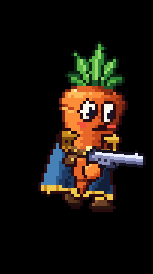
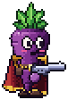

Appearance
How the carrot is drawn and brought to life: a per-pixel shaded body with a face, a cape, gold epaulettes, a belt and floating boots that all move as it runs, jumps and dashes.
The body
The carrot isn't a sprite sheet. A shader works out every pixel each frame: a lit, tapering cone with a domed top, creases that wrap around it, dithered shading in a hand-picked palette, and a dark ink outline that softens on the edges facing the light. Because it's computed rather than drawn, it can squash, stretch and lean while staying pixel-crisp.
- Squash and stretch: it stretches tall on a jump, squashes flat on a landing (harder landings squash more) and squashes wide on a dash. Standing still, it gently breathes.
- Bounce and lean: it bounces with each step and leans into its run.
- Leaves: the tuft on top sways on a spring, trailing when it runs and flopping on landings.
The face
Two eyes sit high on the body, 27.6 px up from the tip, with the mouth just under them at 22 px. (The body is 36 px tall from tip to dome; all the heights on this page are measured up from the tip.) The eyes look toward where you aim and blink now and then (sometimes twice). The face turns a little toward the side the carrot faces, for a three-quarter view.
| When | Expression |
|---|---|
| Normally | A closed smirk, curling up on one side with a dimple |
| Just after shooting | A lopsided toothy grin and angry brows |
| In the air | A small "o" |
| Knocked down | Eyes shut, mouth open |
The gear

Cape
A cape hangs from the shoulders. It has folds that fan out toward a gold-trimmed hem, and a lining in a contrasting colour. It moves as if air were rushing past it:
- It trails behind when you run, rippling harder the faster you go.
- It hangs straight down on the way up a jump and billows up behind you as you fall (never over the face).
- A dash whips it out flat behind you.
- When it swings back, its lining shows along the edge.
- When the carrot is knocked down, it lies flat underneath.
Epaulettes
Gold shoulder pads sit on each side at 19 px, with tassels that swing on a spring as you run, jump, land and dash. The one on the far side is a shade darker, for depth.
Belt
A leather belt at 14.6 px, with a gold buckle at the front, gold studs round the back, a strap end hanging from the buckle and a small pouch on the back hip. The strap and pouch bounce as you move.
Boots
The carrot has no legs: like its hands, its boots float, 3 px below the body.
- Walking: each boot swings forward in an arc of up to 4.5 px, lifting 3 px, then stays planted while the body passes over it.
- Jumping: they dangle on the way up and spread to brace on the way down; landing squashes them apart.
- Dashing: they tuck up and trail behind.
- Knocked down: they stick up past the tip, soles up, kicking.
Footsteps
Every time a boot plants, there's a footstep: a soft boot sound and a puff of dust. Your own footsteps play at volume 0.6 and teammates' at 0.3 (out of 1), so yours stand out. On the title screen, the carrots' walk to the cliff edge has its own footsteps in the grass.
Colours
Each player slot has its own colours: player 1 is orange with a navy cape and red lining, player 2 is purple with a crimson cape and navy lining, and player 3 is orange again. The same colour styles set the body, leaves, hands, boots, the gold, the belt leather and the name-tag accent. The dash trail and the invincibility glow use the player's colour too.
| Player 1 and 3 | Player 2 |
|---|---|
 |
 |
Co-op
All of this animation is worked out from each carrot's velocity and whether it's on the ground, which every machine receives. So everyone sees the same cape flap, boot steps and tassel bounce on every carrot, and everyone hears each other's footsteps.
Design notes
The gear was added to give the carrot a hero's silhouette (a caped adventurer) while keeping it readable at one game pixel to two screen pixels. The cape, epaulettes and belt are part of the same shader as the body, so they squash, lean and tint with it, and appear in the dash afterimages and in the title screen's night-to-dawn lighting. The face was made smaller and set higher so it doesn't crowd the body, and the default mouth is a smirk rather than an open grin.
Tunable parameters
These are read straight from the game's files, so they are always the current values. Open the file in the Godot Inspector to change them.
Face, gear and footsteps
Edit styles/gear_tuning.tres · fields defined in scripts/gear_tuning.gd
| Parameter | Value | Range | What it does |
|---|---|---|---|
| Feet | |||
foot_lift | 3 px | 0 to 8 | How far the body floats above the boots. |
foot_spread | 3 px | 0 to 8 | Each boot's distance from the centre line when standing. |
stride | 4.5 px | 0 to 10 | How far a boot swings forward and back per step at full speed. |
step_height | 3 px | 0 to 8 | How high a stepping boot lifts. |
step_volume | 0.6 | 0 to 1 | Footstep loudness in levels for your own carrot (1 = full volume). |
step_volume_others | 0.3 | 0 to 1 | Footstep loudness for other players' carrots (quieter, so yours stands out). |
| Face | |||
eye_height | 27.6 px | 14 to 32 | Height of the eyes' centres. |
mouth_height | 22 px | 8 to 30 | Height of the mouth (the smirk's middle). |
mouth_offset | 0 px | -3 to 4 | How far the mouth sits toward the side the carrot faces (0 = midway between the eyes). |
| Cape | |||
cape_top | (1.5, 19.5) | Where the cape hangs from: how far behind the centre line, and how high. | |
cape_length | 19 px | 12 to 40 | From the shoulders to the hem. |
cape_width_top | 8.5 px | 4 to 16 | Half-width at the shoulders. |
cape_width_hem | 12 px | 4 to 20 | Half-width at the hem. |
cape_bend | [0.35, 0.75, 1.0, 1.12] | How much each of the four segments follows the swing, shoulders to hem (the hem flies furthest). | |
cape_drag | 0.0065 | 0 to 0.02 | How hard rushing air pushes the cape around, per pixel/s of speed. |
cape_stiffness | 55 | 5 to 200 | Spring pulling the cape toward where the wind blows it (higher = snappier). |
cape_damping | 6 | 0 to 20 | Damping on that spring (lower = floppier, more overshoot). |
cape_flap | 12.6° | 0° to 34.4° | How far the cape ripples when moving fast. |
flap_speed | 4 | 0 to 12 | How fast the ripples run down the cape. |
dash_whip | 9 | 0 to 25 | Angular kick flung into the cape by a dash (higher = a harder whip). |
| Epaulettes and belt | |||
epaulette_height | 19 px | 8 to 32 | Height of the gold shoulder pads (put them near the mouth so the cape hangs from there). |
tassel_length | 4 px | 0 to 8 | How long the epaulettes' tassels hang. |
belt_height | 14.6 px | 4 to 24 | Height of the belt (its middle at the back; it sags a pixel lower at the front). |
| Tassels and strap | |||
tassel_stiffness | 170 | 10 to 400 | Spring swinging the epaulette tassels (higher = quicker jiggle). |
tassel_damping | 5 | 0 to 20 | Damping on the tassels (lower = more wobble). |
strap_stiffness | 110 | 10 to 400 | Spring swinging the belt's strap end and pouch. |
strap_damping | 4 | 0 to 20 | Damping on the strap and pouch (lower = more wobble). |
Player 1 and 3 colours
Edit styles/orange.tres · fields defined in scripts/carrot_style.gd
| Parameter | Value | Range | What it does |
|---|---|---|---|
body | script default [] | Six body tones, darkest to lightest. | |
spec | #ffe6a8 script default #ffe6a8 | ||
line | #2b0d10 script default #2b0d10 | ||
line_lit | #7a2717 script default #7a2717 | Outline next to the brightest body tones. | |
leaf | script default [] | Five leaf tones, darkest to lightest. | |
leaf_line | #0d2414 script default #0d2414 | ||
blush | #f5503f script default #f5503f | ||
face_line | #2b0d10 script default #2b0d10 | ||
hand | script default [] | The floating mitts: highlight, base, shade, dark, and their outline. | |
hand_line | #2b0d10 script default #2b0d10 | ||
accent | #ffbd5c script default #ffbd5c | Name tags and other UI accents for this player. | |
zombie | No | Zombie look: wilted leaves, a goggling eye and a squint, and rot blotches in these six tones. | |
rot | [] | ||
| Hero gear | |||
gear | Yes script default No | Cape, epaulettes, belt and boots (players). Zombies leave this off. | |
cape | script default [] | Four cape tones, darkest to lightest, and the lining's shade and light. | |
lining | script default [] | ||
gold | script default [] | Epaulettes, buckle, tassels and the cape's hem: four golds, darkest to lightest. | |
leather | script default [] | Belt and boot leather, darkest to lightest. | |
Player 2 colours
Edit styles/purple.tres · fields defined in scripts/carrot_style.gd
| Parameter | Value | Range | What it does |
|---|---|---|---|
body | script default [] | Six body tones, darkest to lightest. | |
spec | #edc7eb script default #ffe6a8 | ||
line | #17081f script default #2b0d10 | ||
line_lit | #4c1f5c script default #7a2717 | Outline next to the brightest body tones. | |
leaf | script default [] | Five leaf tones, darkest to lightest. | |
leaf_line | #0d2414 script default #0d2414 | ||
blush | #ed5c99 script default #f5503f | ||
face_line | #17081f script default #2b0d10 | ||
hand | script default [] | The floating mitts: highlight, base, shade, dark, and their outline. | |
hand_line | #17081f script default #2b0d10 | ||
accent | #d999e0 script default #ffbd5c | Name tags and other UI accents for this player. | |
zombie | No | Zombie look: wilted leaves, a goggling eye and a squint, and rot blotches in these six tones. | |
rot | [] | ||
| Hero gear | |||
gear | Yes script default No | Cape, epaulettes, belt and boots (players). Zombies leave this off. | |
cape | script default [] | Four cape tones, darkest to lightest, and the lining's shade and light. | |
lining | script default [] | ||
gold | script default [] | Epaulettes, buckle, tassels and the cape's hem: four golds, darkest to lightest. | |
leather | script default [] | Belt and boot leather, darkest to lightest. | |